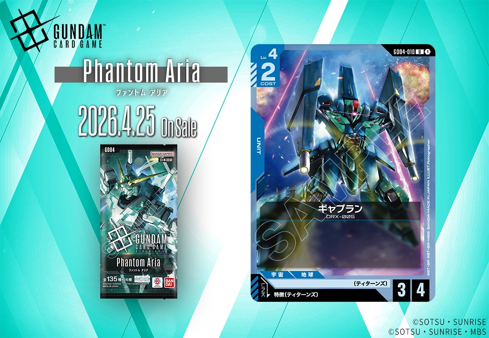

GD04 Phantom Ariaより、青色の新たなUNITカード「ギャプラン」1枚が収録されます。青色デッキの選択肢を広げる新戦力として、既存の青色UNITとの相性やメタゲームへの影響が気になるところです。

ギャプラン (GD04-010)
| 色 | 青 | タイプ | UNIT |
| Lv | 4 | COST | 2 |
| AP | 3 | HP | 4 |
| 特徴 | ティターンズ | ||
COST2でAP3/HP4というスタッツは標準的なバニラUNITとして見ると平均的な性能です。ティターンズ特徴を持つため、同特徴のシナジーカードとの組み合わせでデッキに採用される可能性がありますが、効果を持たないため単体での採用優先度は低めでしょう。青系デッキで高い採用率を誇るハイザックと比較すると、特別な効果がない分だけ競争力に欠ける印象です。
関連カード
-
 ハイザック(GD02-013)青系デッキ内採用率25.3% (238デッキ)
ハイザック(GD02-013)青系デッキ内採用率25.3% (238デッキ) -
 ジ・O(GD03-002)青系デッキ内採用率5.9% (56デッキ)
ジ・O(GD03-002)青系デッキ内採用率5.9% (56デッキ) -
 メッサーラ(GD03-003)青系デッキ内採用率5.9% (56デッキ)
メッサーラ(GD03-003)青系デッキ内採用率5.9% (56デッキ) -
 パプテマス・シロッコ(GD03-084)青系デッキ内採用率5.8% (55デッキ)
パプテマス・シロッコ(GD03-084)青系デッキ内採用率5.8% (55デッキ) -
 ジュピトリス(GD03-123)青系デッキ内採用率0.3% (3デッキ)
ジュピトリス(GD03-123)青系デッキ内採用率0.3% (3デッキ)